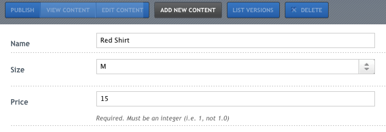
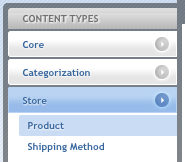

Understanding Content BlocksThis guide covers how developers can create content blocks. It covers the following concepts:
This guide is for BrowserCMS 3.1. Some code shown here may not work with older versions of BrowserCMS. 1 Generating a new Content BlockNew blocks can be creating using their own generator. For this guide, we will start by creating a Product block. This will represent a single product that users can browse and purchase for. CMS users will be able create new products via a generated user interface. Products can be place on pages as content, or fetched by Portlets based on specific criteria. Run the following command: $ script/generate content_block Product name:string price:integer description:htmlThis generates the Content Block with several attributes. We will cover a list of available attributes later. 1.1 Generated filesThe generator creates a number of files, as well as modify the routes.rb file to add the new routes for modifying Products.
1.2 Migrating the databaseAfter generating the content block, you will need to run the migration to add the product tables. Run the following at your terminal: $ rake db:migrateThis will create several tables and registers the new Product in the UI. You should not need to restart your server if its already running to use the admin interface. 1.3 Viewing the User InterfaceAfter creating the model, you can review the basic user interface that has been generated to add and edit products. In the CMS UI, you can go directly to /cms/products. This is the index page for products, which will list all instances of your Product models in the database. As we have just created this block, there should be none in the database. Click on the Add New Content button, which will bring up the form to add a new instance of a Product. This form will have three form fields for the three attributes we specified in our generator, name, price and description. The form fields available on this page are determined by what is in the +app/views/cms/products/_form.html.erb, which will cover later. Fill in some data for each of these three fields and click the Save and Publish button. You will now be looking at a view of the product you just added. Each product has a default way of showing it’s data to the world, which is defined in the app/views/cms/products/render.html.erb file. When a block is first generated, it will just list it’s attributes. However, as you will see later, you can edit that file to change how it’s displayed. On this page (/cms/products/1) you are seeing a product by itself, but since any block can be added to a page, the render.html.erb determines how it will look. 2 Available AttributesBlocks are really just ActiveRecord models, and they will support all of the same attribute or column types that Rails model or migrations do. Each attribute will be mapped to a column in the products table and will have a form field to allow users to edit it. Here is a list of the commonly used attributes. Not all attributes can be specified via the generator, though they can be added to blocks later. These attribute
Table Key
2.1 ExamplesHere are some examples of potential usages for generating blocks, using the generator. $ script/generate content_block Meeting name:string active:boolean start_date:date end_time:datetime
$ script/generate content_block photo attachment:attachment on_shelf:category2.2 Gotchas
2.3 Other AttributesThis list of attributes isn’t comprehensive and any migration attribute supported by Rails may work. The content_block generator will just pass the attribute to the migration and use a cms_text_field to edit the attribute. 3 ValidationsSince content blocks are just still ActiveRecord objects, you can use any Rails Validations to enforce the data validity. Let’s add one to our Product. Edit the app/models/product.rb file. It should look like this: class Product < ActiveRecord::Base
acts_as_content_block
endLet’s assume we want to require that users will specify a price when they add a new product. Add the following to the block. class Product < ActiveRecord::Base
validates_presence_of :price
endThen open up /cms/products in your browser and click Add New Content. Leave the price empty and try to save the block. The CMS will check the product has a price, and will display an error message if it’s not included. It will also highlight the field to indicate where the error is. See the ActiveRecord Validation Guide for a more detailed list of supported validations. 4 Customizing the FormThe form created for us is good enough, but suppose we want change it up a bit. For example, I would like to add some instructions to our price field to indicated that it’s a required integer (whole dollars only) and put it last in the order. We can do this by editing the app/views/cms/_form.html.erb partial. Here’s what our Form looks like: <%= f.cms_text_field :name %>
<%= f.cms_text_field :price %>
<%= f.cms_text_editor :description %>Switching the order is easy. Just move the :price line after the :description line. There is also an easy way to add instructions to any given field by adding a :instructions option to it. Change the _form.html.erb to the following: <%= f.cms_text_field :name %>
<%= f.cms_text_editor :description %>
<%= f.cms_text_field :price, :instructions=>"Required. Must be an integer (i.e. 1, not 1.0)" %>Refresh the /cms/products/new page to see the changes to the form. The price field show now appear last and will have helpful instructions written out below the text field. All form fields should support an :instructions option. 5 Changing the ViewAs mentioned before, each content block has a single view that will be used to render the HTML when this product is placed directly on a page. For our Product block, this file is app/views/cms/products/render.html.erb. Open up that file and you should see the following: <p><b>Name:</b> <%= @content_block.name %></p>
<p><b>Price:</b> <%= @content_block.price %></p>
<p><b>Description:</b> <%= @content_block.description %></p>This is a reasonable start, but its likely you will want to change this if you start placing Products onto pages. Let’s go ahead and alter this file to see how it works. Alter it to match the following: <p><b><%= @content_block.name %></b> $<%= @content_block.price %>.00</p>
<p><%= @content_block.description %></p>Then open the /cms/products/1 URL in your browser and see what a single product looks like. This isn’t the only way to alter how a block looks, as Portlets can also find and display blocks using different views. And if you don’t plan to use Products individually, you can likely skip this step and just build the portlets you need. 6 Adding more attributesWhen working with blocks, its easiest if you know all your attributes before you generate the block. However, you can still add additional attributes after you have generated the block. To add a new field to a block, you will need to make the following changes:
Let’s update our Product to add a Size attribute, which will be a drop down where users can choose S, M, L and XL. 6.1 Adding a content column via migrationTo add a column to an existing block, run the following command: $ script/generate migration update_productsThis will generate a single file db/migrate/20100129000441_update_products.rb. Open up that file, alter it to match the following: class UpdateProducts < ActiveRecord::Migration
def self.up
add_content_column :products, :size, :string
end
def self.down
remove_column :products, :size
remove_column :product_versions, :size
end
endBrowserCMS adds a new migration method called add_content_column, which you can use to add the column to the correct tables. Run rake db:migrate to add the column to the database. One of the differences between a typical Rails Active Record and a CMS Content Block is that content blocks are versioned, meaning they keep track of every change made to them. To do this requires an additional table to keep all the older states. For example, there are two tables for our Product, products and product_versions. So when you add a new column, it must be added to both tables, which add_content_column does for you. 6.2 Add Field to FormWe want to add a selectbox to the form which will allow our user to choose from S, M, L or XL. Open the app/views/cms/products/_form.html.erb and add a new field cms_drop_down like this: <%= f.cms_text_field :name %>
<%= f.cms_drop_down :size, ["S", "M", "L", "XL"] %>
<%= f.cms_text_editor :description %>
<%= f.cms_text_field :price, :instructions=>"Required. Must be an integer (i.e. 1, not 1.0)" %>This will render a styled select box which will present the four choices and store the value as a string. Open /cms/products/new and you should see the following:  7 Renaming Content TypesWhen you generate a content block, by default it will use the name of the class as the ‘Display Name’ through out the user interface. In the content library in the content type menu you see ‘Products’ and the page says ‘View Product’. In some cases, the name of the class may be different that how you want it displayed, or you might want to relabel it without rewriting your code. You can set the display_name of a given content type by defining a new method in your block. Suppose we wanted to rename our Product Block from “Product” to “Book” throughout the UI. Edit the app/model/product.rb to add the following method. class Product < ActiveRecord::Base
# ...
def self.display_name
"Book"
end
endBrowserCMS will use whatever value is returned by display_name in the UI for singular labels (i.e. Add New Book). It will automatically pluralize display_name as well. If you want to explicitly set the plural form of your block, you can do so by adding the following method to the block. class Product < ActiveRecord::Base
# ...
def self.display_name_plural
"Bookz"
end
endThis will not change the path to manage the block. I.e. even after change from “Product” to “Book”, the route for viewing a Product will be /cms/products/1, not /cms/books/1. 8 Grouping Related BlocksAs you define new Content Blocks in your project, you will notice that each new one will appear in its own group on the Content Types menu of the Content Library. By default, each Block will be assigned to its own group. It’s often a good idea to group several related Content Blocks together into a single group to keep users understand which types belong together. Open the db/migrate/20100128194303_create_products.rb migration file, which is where the ‘Group’ name is set. class CreateProducts < ActiveRecord::Migration
def self.up
# ...
ContentType.create!(:name => "Product", :group_name => "Product")
end
# ...
endWhen a new ContentType is created, it determines which group_name is used. By default, the group name will be the same as the block name. Change the :group_name=>"Product" to :group_name=>"Store", then run the following command to drop and rebuild the database using the migrations rake db:drop db:create db:migrate This technique is an easy way to just toss out all your development data and start over. Often times, its quicker to just edit an existing migration and rerun them all, rather than create a ton of little migrations just for changes to your local database. 8.1 Adding a Second Block to ‘Store’ GroupNow that we have renamed our Group from ‘Product’ to ‘Store’, lets add another block to the ‘Store’. Run the following: $ script/generate content_block ShippingMethod name:string insured:booleanBefore running the migration, edit the db/migrate/20100129154902_create_shipping_methods.rb file to alter the following line: class CreateShippingMethods < ActiveRecord::Migration
def self.up
# ...
ContentType.create!(:name => "ShippingMethod", :group_name => "Store")
end
# ...
endNow run the migration to add the Shipping Method block. Open your browser to /cms/products and your Content Types menu should look like this:  9 Associations between BlocksSince Content Blocks are Active Record objects, they can be associated with each other like any models can. This includes the commonly used belongs_to and has_many associations. You can see the Active Record Associations Guide for details on how associations work. When you associate Content Blocks, you will need to determine how you allow users to edit content. For instance, if our Product had a belongs_to relationship with a Category object you can use a cms_drop_down Field that allows users to select a single category. In some cases, you may need to build your own form fields for more complex relationships (Like javascript based controls). You can use the basic Rails FormBuilder methods to construct new Fields. To get things to look right (with labels and alignments), you should start with the html used to generate other fields and work backwards from there. Understanding Versioning: It’s important to recognize how versioning works with respect to related blocks. Versioning will keep track of the state of each block everytime the row is saved, but does not keep track of the relationships between blocks. So if I update our Product block, then renamed the Category block it’s related to, reverting that Product will not undo the Category name change. 10 Field TypesThis section servers as a quick reference of the field types that Content Blocks can have. Fields are the html widgets you use to edit properties on blocks. The complete list of available fields is:
10.1 Select / cms_drop_downThis is similar to the traditional ‘select’ helper, it renders a stylized select control which allows users to choose one item from a list. In _form.html.erb: <%= f.cms_drop_down :category_id, Category.all(:order => "name").map{|c| [c.name, c.id]},
:prompt => "Select a Category", :label => "Category",
:instructions=>"Determines which category is used on the homepage." %>In product.rb: class Product < ActiveRecord::Base
belongs_to :category
end10.2 Attachments / cms_file_fieldEach content block can have a single file attachment, which will allow users to upload files into the content repository. After uploading, the file will be stored in a section within the CMS. Since sections determine permissions, this will allow you to control which users can access the file itself. Attached files will have their own versioning history, which will keep track of changes. This helper will create a stylized file upload file. An uploaded file will be associated with the content_block to which it is attached. In _form.html.erb (View) <%= f.cms_file_field :attachment_file, :label => "File" %>In product.rb (Block) class Product < ActiveRecord::Base
acts_as_content_block :belongs_to_attachment => true
endIn create_products.rb (Migration) create_content_table :products do |t|
t.belongs_to :attachment
t.integer :attachment_version
end
11 ControllersEach block is will also have an associated Controller, which gives it the same CRUD methods that a typical Rails resource would have, along with a few others (like publishing and reverting). By default, the generated controller inherits all this behavior from Cms::ContentBlockController and is therefore pretty empty. Like so: class Cms::ProductsController < Cms::ContentBlockController
endIf you want to define new methods (or override the existing methods) you can do so by editing this controller. 11.1 Public ControllersThe above controller is intended to handle only admin related actions. If you want to create a controller to use in the front end of your application, create a products controller that is not in the CMS namespace, so as not to conflict the CMS functionality. |